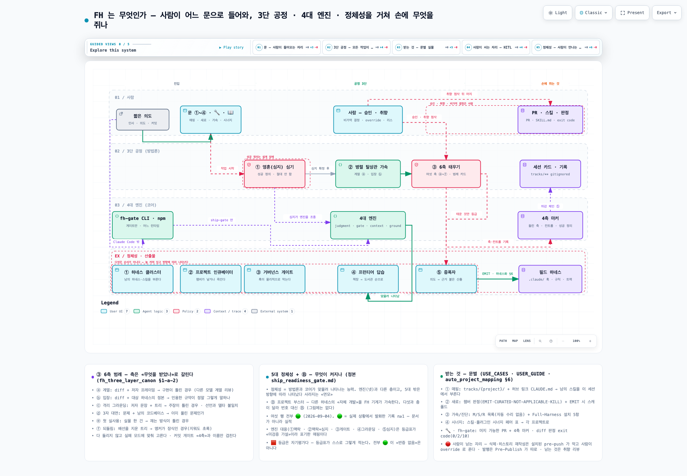
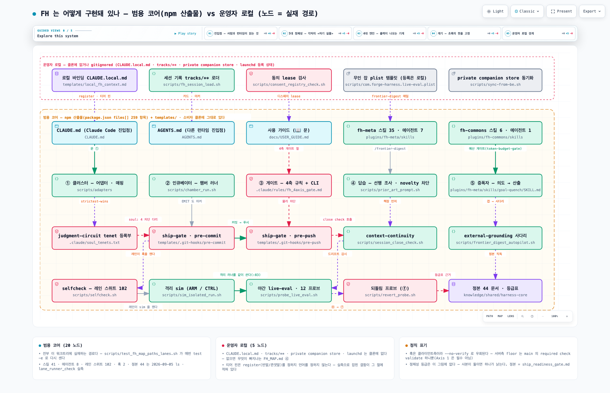
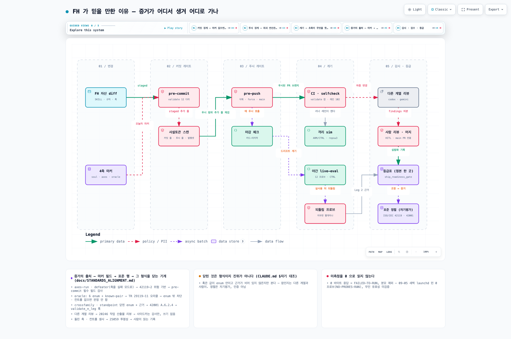

FH는 Claude Code 위에서 도는 메타 하네스입니다. 여기서 하네스란 한 프로젝트의 규칙, 게이트, 기억을 한 몸으로 묶은 것을 말합니다. FH는 짧은 의도를 규칙과 코드로 굳혀 산출물까지 만들고, 그 산출물을 다른 프로젝트에 하네스로 심습니다. 처음 온 분이 알고 싶은 것은 보통 둘입니다. 들어가면 손에 무엇이 남는가, 그리고 그 근거를 어디까지 믿어도 되는가. 아래는 그 순서입니다.
클릭하면 인터랙티브 그림이 열립니다. 설치도 서버도 필요 없습니다.

① 흐름 — 문에서 손에 쥐는 것까지 의도가 3단 공정과 4대 엔진을 거쳐 필드 하네스·PR·마커가 되는 길. 6축 범례와 문별 산출물이 카드로 붙어 있습니다.
② 모듈 — 어떤 파일이 그 일을 하나 노드 37개가 전부 실재하는 경로입니다. 범용 코어와 운영자 로컬의 경계도 그 위에 그려져 있습니다.
③ 증거 — 어디서 생겨 어디로 가나 변경에서 커밋 게이트·푸시 게이트·계기·등급까지. 마커 필드가 어느 표준 행에 대응하는지 카드로 붙어 있습니다.산문 정본은 docs/map/FH_MAP.md입니다. 등급표는 ship_readiness_gate.md 한 곳에만 있고, 이 페이지는 등급을 싣지 않습니다.
아래는 지도가 그리는 것을 글로 풀어 쓴 것입니다 — 시작하는 법과 낱말 넷, 문별 산출물, 그 증거가 기대는 표준, 실제 사례 한 건. 순서도 그대로입니다.
git clone https://github.com/chrono-meta/forge-harness # 규칙·정본·훅·스킬 전부 (Claude Code 안에서 쓸 때) npx --package @chrono-meta/fh-gate fh-gate # 게이트만, Claude Code 없이
클론한 뒤 Claude Code 세션을 그 디렉터리에서 열고 "안녕"이라고 치면 아래 문 메뉴가 뜹니다. 설치 절차 전체는 USER_GUIDE.md에 있습니다.
| 문 | 인사 뒤에 뜨는 메뉴 항목. ①~④와 🔧, 📖. 번호를 말하거나 하고 싶은 일을 문장으로 말하면 됩니다. |
|---|---|
| 마커 | FH 자산을 고친 커밋마다 사람이 쓰는 텍스트 파일. 어떤 검증 축을 돌렸고 컨트롤(대조군)이 살았는지, 성공 정의가 무엇이었는지를 적습니다. 이 파일이 없거나 비어 있으면 pre-commit 훅이 커밋을 막습니다. |
| 챔버 | 새 하네스나 스킬 후보를 격리해서 낳을지 죽일지 판정하는 런. 판정은 넷 중 하나입니다. EMIT(낳는다), CURATED(선행 자료만 넘긴다), NOT-APPLICABLE(판단 성격이라 챔버 대상이 아니다), KILL(안 만든다). |
| 레인 | 알려진 양성과 음성 짝을 실행해 초록·빨강을 내는 검사 한 개. 스크립트 하나에 여러 레인이 들어갑니다. |
여기 나오는 숫자와 등급은 전부 저장소 파일에서 그대로 가져온 것이고, 각 줄에 그 파일을 걸어 두었습니다. 이 페이지가 새로 만든 숫자는 없습니다.
문마다 손에 남는 것이 다릅니다. 수치가 아니라 실물 기준으로 적었습니다.
| 문 | 언제 고르나 | 손에 쥐는 것 | 정본 |
|---|---|---|---|
| ① 프로젝트 매핑 | 이미 있는 레포를 FH가 알게 하고 싶다 | tracks/{project}/ 디렉터리와 허브 링크가 든 CLAUDE.md. 이후 다른 프로젝트의 스킬을 이 세션에서 바로 부를 수 있습니다. | auto_project_mapping.md |
| ② 새 프로젝트 | 만들지 말지부터 불확실하다 | 챔버 런 판정(EMIT / CURATED / NOT-APPLICABLE / KILL). EMIT이면 스캐폴드가 나옵니다: .claude/ 규칙, 게이트 훅, 세션 규칙, 트랙. | harness_incubator_doctrine.md |
| ③ 가속 / 진단 | 매핑된 프로젝트에 "진단해줘", "개선해줘" | M/S/R 등급이 붙은 진단 목록(자동으로 고치지 않습니다). 하네스화를 고르면 설치 5항: 세션 규칙, .claudeignore, env 카드, MCP 게이팅(외부 MCP를 쓰는 프로젝트만), 플러그인 추천 목록. | auto_project_mapping.md §6 |
| ④ 크로스 시너지 | 프로젝트가 2개 이상일 때 | 설치된 스킬과 플러그인의 시너지 페어 표. 세션에 출력되고 로컬 기록(tracks/_meta/synergy_scan_{날짜}.md, gitignored)으로 남습니다. 발견은 각 프로젝트의 트랙으로 되돌아갑니다. | USER_GUIDE.md |
| 🔧 FH 자체 개발 | FH를 고치는 사람 | 머지 가능한 PR과 4축 마커(어느 축을 돌렸고 컨트롤이 살았는지, 성공 정의가 무엇이었는지를 적은 파일). | fh_4axis_gate.md |
| fh-gate CLI | Claude Code 없이 게이트만 쓰고 싶다 | diff 판정 exit code: 0 PASS, 1 PENDING, 2 BLOCKED, 3 ESCALATE, 10 하네스 오류. CI가 그대로 읽습니다. | USE_CASES.md §2 |
일반 코딩 에이전트와의 차이: 답을 내는 속도가 아니라, 나간 것이 되돌리기 어려운 지점(커밋, 푸시, 삭제, 공개) 앞에 파일이 서 있는가입니다. 사람에게 남는 것은 취향 리뷰이고, "돌아가나", "되돌리면 빨개지나"는 PR 전에 기계가 닫습니다.
FH는 "믿을 만하다"를 산문으로 말하지 않고 아래 표로 답합니다. 왼쪽 열의 마커 필드가 실물이고, 두 번째 열은 그 필드가 어느 표준 조항과 같은 질문을 다루는지입니다.
먼저 읽을 한 줄. 이 대응은 FH가 스스로 매긴 자기평가이고 인증이 아닙니다. 42119 시리즈의 절반은 아직 초안이라 쓰는 낱말은 "정렬"이지 "준수"가 아닙니다. 정본 문서(STANDARDS_ALIGNMENT.md)가 자기 한계를 그렇게 적고 있습니다.
| 마커 필드 / 규율 | 같은 질문을 다루는 표준 조항 | 형식을 닫는 기계 | 사람 몫 |
|---|---|---|---|
축을 실패 모드로 고른다 (axes-run, defeater) | ISO/IEC TS 42119-2 위험 기반 테스트 | pre-commit이 마커 필수 필드를 검사합니다 | 어느 축이 이 변경의 실패 모드인지 고르는 것 |
| 오라클 6종 enum + known-pair 컨트롤 | ISO/IEC TR 29119-11 오라클 문제 | enum 밖 값은 차단, 컨트롤 없는 측정은 판정하지 않습니다 | 그 오라클이 정말 옳은 기준인지 |
crossfamily, standpoint 닫힌 enum + 비공허 근거 | ISO/IEC 42001 A.6.2.4 검증과 확인 | validate_*_leg 훅이 값과 근거의 형식을 차단합니다 | 적은 근거가 참인지 |
| 다른 모델 계열 리뷰 | ISO/IEC 20246 작업 산출물 리뷰 | 사이드카는 감사만 하고 트리에 쓰지 않습니다 | 지적을 받아들일지, 반박할지 |
| 마커의 "돌린 축과 컨트롤 생사" | ISO/IEC 25059 투명성 | 기록이 파일로 남습니다 | 그 기록을 읽는 것 |
전체 표(25행)와 조항별 출처는 docs/STANDARDS_ALIGNMENT.md와 iso_ai_standards_crosswalk.md에 있습니다.
훅이 닫는 것은 형식입니다. 값이 목록 안에 있고 근거가 비어 있지 않은지를 봅니다. 그 값이 참인지는 보지 않습니다. 그래서 자기 채점은 여전히 게임 가능하고, 닫는 방향은 다른 계열이 그 기록을 읽는 것입니다. 이 문장은 CLAUDE.md의 "자기 대조" 절에 그대로 있습니다.
막힘 세션 기록을 개인 저장소로 미러하는 스크립트가, 목적지 경로가 없으면 그 경로를 만들어서 파일을 밀어넣었습니다. 환경변수에 오타가 하나 있으면 비공개 절반이 조용히 다른 곳에 복제되고 종료 코드는 0이었습니다.
넣음 목적지가 git 워크트리의 루트 자체가 아니면 거부하는 가드를 넣었습니다. 경로는 물리 경로로 비교하고(심볼릭 링크 대비), 새 저장소는 --init으로만 명시적으로 만듭니다. 다른 계열(codex) 리뷰가 5라운드 돌았고 다섯 번째에서 수렴했습니다. 앞의 네 라운드는 매번 실제 구멍을 냈습니다. 예를 들어 "어느 git 워크트리 안이면 통과"는 다른 레포의 하위 디렉터리를 통과시켰고, 마지막 두 라운드는 git 훅이 넘겨주는 환경변수와 실행 중 저장소 교체까지 닫았습니다. 레인은 36개에서 155개로 늘었고, 가드를 되돌리는 뮤턴트 14개마다 해당 레인만 빨개지는지 확인했습니다.
나온 것 없는 경로는 rc=12로 거부되고 파일은 0개 생깁니다. 다른 노드가 앞선 경우는 21줄 경고 벽 대신 3줄 안내와 rc=2가 나옵니다. 실제 저장소에 돌린 첫 실사용은 rc=0이었습니다.
출처: 2026-09-05 세션 기록(4축 마커와 완료 로그, 운영자 로컬). 코드는 scripts/sync-to-be.sh와 scripts/sync_to_be_lanes.sh. 위 숫자는 5차 리뷰가 수렴한 뒤의 기록입니다.
첫 질문으로 돌아가면, FH를 쓰면 문에 따라 매핑된 트랙, 하네스 스캐폴드, 진단 목록, PR과 마커가 남습니다. 그 근거는 마커 필드가 표준 조항과 같은 질문을 다루고 훅이 형식을 닫는 데까지입니다. 값이 참인지는 다른 모델 계열과 사람이 읽습니다. 사람 몫은 승인, 취향, 되돌리기 어려운 결정입니다.